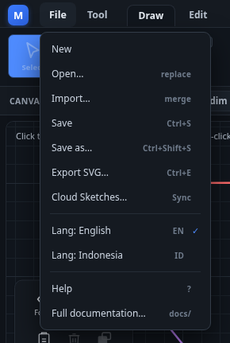
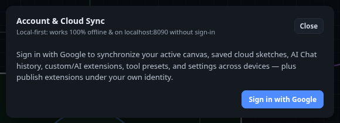

Menu Berkas
Buka melalui tombol File di ribbon. Semua operasi berkas juga punya tombol pintas keyboard.

docs/).1. Operasi berkas
| Pintasan / Menu | Keterangan |
|---|---|
| Ctrl+O — Open | Mengganti seluruh sketsa dengan file .sketch / .json dan menyesuaikan tampilan (frame). |
| Ctrl+I — Import | Menggabungkan file ke sketsa yang aktif: isi lama tetap di posisinya, geometri impor ditempatkan di kanan konten yang sudah ada (jarak 50 mm, rata atas) atau di pusat viewport bila halaman kosong. |
| Ctrl+S — Save | Menyimpan / mengunduh berkas .sketch ke disk (atau menimpa file yang terhubung); sementara di browser, setiap edit otomatis tersimpan lokal secara berkala. |
| Ctrl+Shift+S — Save as | Selalu menanyakan nama file baru, unduh .sketch. |
| Ctrl+E — Export SVG | Ekspor SVG dengan opsi: hanya objek terpilih, hanya layer terlihat, atau hanya layer aktif, dengan garis hairline untuk Inkscape. |
2. Status file aktif
Nama file yang sedang dibuka tampil sebagai keterangan kecil di bawah panel warna strip (dan di judul tab browser jika ada). Titik kecil di sebelahnya menyala saat dokumen berbeda dari file di disk. Klik keterangan itu = Save.
3. Format yang didukung
- .sketch / .json — format native MiniSketch, readable JSON, dibuka dengan Open.
- .svg — impor vektor (lihat halaman Import).
- .pdf — gambar vektor dengan ukuran cetak asli.
- .cdr — CorelDRAW X4 dan lebih baru.
- .dxf — ASCII DXF dari program CAD (biner tidak didukung, simpan ulang sebagai ASCII DXF).
4. Akun Google & Cloud Sync (Opsional)
MiniSketch selalu berjalan local-first & offline — tanpa login sekalipun, seluruh sketsa, ekstensi, pengaturan, dan riwayat AI tetap tersimpan aman di browser lokal Anda.

- Jika ingin menyinkronkan sketsa aktif, Saved Cloud Sketches, pengaturan, ekstensi, dan sesi AI Chat antar-perangkat, klik chip akun di pojok kanan atas atau File ▸ Cloud Sketches… untuk masuk dengan Google.
- Secara bawaan, sinkronisasi berjalan manual (on-demand) agar pengeditan di kanvas tetap cepat tanpa upload berulang. Klik Sync di header atau gunakan Sync Now / Pull Cloud serta Save to Cloud untuk menyimpan snapshot bernama kapan saja. Opsi Auto-sync while editing dapat dicentang bila menginginkan sinkronisasi otomatis.
- Sebelum diunggah ke Cloud, payload sketsa dikompresi otomatis dengan gzip agar geometri besar muat jauh lebih lega di bawah batas penyimpanan 900 KB per dokumen.
File Menu
Open via the File button in the top ribbon. Every file action also has a keyboard shortcut.
docs/).1. File Operations
| Shortcut / Menu | Description |
|---|---|
| Ctrl+O — Open | Replaces the current sketch with a .sketch / .json file and frames the view to fit. |
| Ctrl+I — Import | Merges a file into the active sketch: existing geometry stays in place and imported items land to the right of existing content (50 mm gap, top-aligned), or centered if the page is empty. |
| Ctrl+S — Save | Saves / downloads a .sketch file to disk (or overwrites the linked file); locally in the browser, edits also autosave periodically. |
| Ctrl+Shift+S — Save as | Always prompts for a new filename and downloads .sketch. |
| Ctrl+E — Export SVG | Exports SVG with options for selection only, visible layers only, or active layer only, plus hairline strokes for Inkscape. |
2. Active File Indicator
The current filename appears as a subtle caption below the stroke color strip (and in the browser tab title). A small dot lights up when the canvas has unsaved changes compared to disk. Clicking that label runs Save.
3. Supported Formats
- .sketch / .json — native MiniSketch readable JSON format opened with Open.
- .svg — vector import (see the Import page).
- .pdf — vector graphics imported at true print scale.
- .cdr — CorelDRAW X4 and newer.
- .dxf — ASCII DXF from CAD programs (binary DXF is not supported; re-export as ASCII DXF).
4. Google Account & Cloud Sync (Optional)
MiniSketch is strictly local-first & works offline — even without signing in, your sketches, extensions, settings, and AI chat history remain saved safely in local browser storage.
- To sync your active workspace, Saved Cloud Sketches, preferences, extensions, and AI sessions across devices, click the top-right account chip or open File ▸ Cloud Sketches… to sign in with Google.
- By default, cloud sync is manual (on-demand) so editing stays instant without background uploads on every drag. Click Sync in the header or use Sync Now / Pull Cloud and Save to Cloud for named snapshots whenever ready. You can optionally check Auto-sync while editing inside the dialog.
- Sketch payloads are automatically gzip-compressed before uploading so larger drawings fit comfortably within the 900 KB per-document cloud limit.